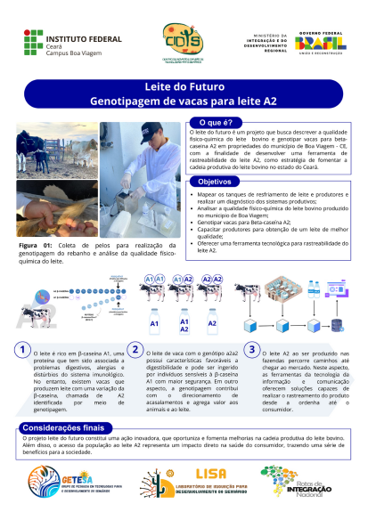

Leite do Futuro Genotipagem de vacas para leite A2

O que é?
O Centro de Inovação e Difusão de Tecnologias para o Semiárido tem como área de abrangência o semiárido nordestino brasileiro que demonstra uma capacidade única de se desenvolver apesar das intempéries climáticas e naturais as quais a região está inserida. O Ministério da Integração e do Desenvolvimento Regional (MIDR) em conjunto com as Secretarias de Governo, Empresa Brasileira de Pesquisa Agropecuária (EMBRAPA), Universidades e Institutos, Cooperativas e Associações de Produtores, têm investido recursos nessa região como forma de ampliar a capacidade de desenvolvimento econômico de mercado, tecnológico e formativo.
Objetivo
- Mapear os tanques de resfriamento de leite e produtos e realizar um diagnóstico dos sistemas produtivos:
- Analisar a qualidade físico-quimico do leite bovino produzido no municipio de Boa Viagem;
- Genotipor vacas Beta-caseína A2;
- Capacidade produtores para obtenção de um leite de melhor qualidade;
- Oferecer uma ferramenta tecnológica para rastreabilidade do leite A2;